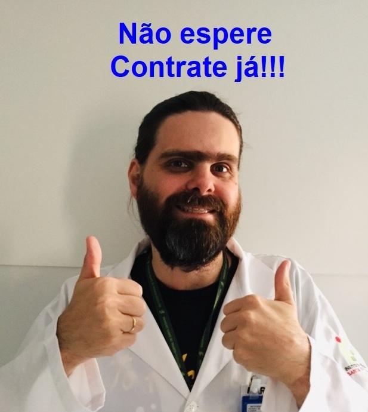

Olá, eu sou Marzeu Selau Júnior.
Tecnólogo em Radiologia, Físico e Técnico em Eletrônica.
Olá, estou à procura de oportunidades na área de programação e TI em geral. Tenho experiência em manutenção de computadores, docência e estou estudando e aprimorando cada vez mais minhas habilidades técnicas. Tenho um bom relacionamento interpessoal, bom rendimento em trabalhos de equipe, senso de humor, gosto de cerveja e metal pesado e acima de tudo amo a minha noiva.
| Naturalidade: | Curitiba | Idade: | 37 anos |
|---|---|---|---|
| E-mail: | msjfsc@gmail.com | Celular: | (48) 9 9645-4572 |
Minhas Redes